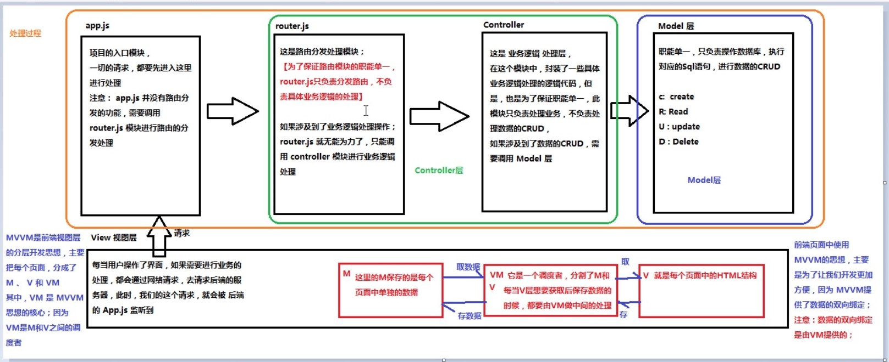

前端知识点整理
Doctype作用？标准模式与兼容模式各有什么区别？
<!DOCTYPE>声明位于位于HTML文档中的第一行，处于<html>标签之前。告知浏览器的解析器用什么文档标准解析这个文档。DOCTYPE不存在或格式不正确会导致文档以兼容模式呈现。- 标准模式的排版和JS运作模式都是以该浏览器支持的最高标准运行。在兼容模式中，页面以宽松的向后兼容的方式显示,模拟老式浏览器的行为以防止站点无法工作。
<img> 的 title 和 alt 有什么区别？
- title 是全局属性之一，用于为元素提供附加的信息。通常当鼠标滑动到元素上时显示。
- alt 是
<img>的特有属性，是图片内容的等价描述，用于图片无法加载时显示，可提高图片可访问性，除了纯装饰图片之外都必须设置有意义的值。
行内元素有哪些？块级元素有哪些？空(void)元素有那些？
首先：CSS规范规定，每个元素都有display属性，确定该元素的类型，每个元素都有默认的display值，如div的display默认值为“block”，则为“块级”元素；span默认display属性值为“inline”，是“行内”元素。
- 行内元素有：a b span img input select strong（强调的语气）
- 块级元素有：div ul ol li dl dt dd h1 h2 h3 h4… p
- 常见的空元素：
<br> <hr> <img> <input> <link> <meta>
页面导入样式时，使用link和@import有什么区别？
- link属于XHTML标签，除了加载CSS外，还能用于定义RSS, 定义rel连接属性等作用；而@import是CSS提供的，只能用于加载CSS;
- 页面被加载的时，link会同时被加载，而@import引用的CSS会等到页面被加载完再加载。
介绍一下标准的CSS的盒子模型？低版本IE的盒子模型有什么不同的？
- 有两种， IE 盒子模型、W3C 盒子模型；
- 盒模型： 内容(content)、填充(padding)、边界(margin)、 边框(border)；
- 区 别： IE的content部分把 border 和 padding计算了进去;
CSS sprite
- 概念：将多个小图片拼接到一个图片中。通过background-position和元素尺寸调节需要显示的背景图案。
- 优点：
- 减少HTTP请求数，极大地提高页面加载速度
- 增加图片信息重复度，提高压缩比，减少图片大小
- 更换风格方便，只需在一张或几张图片上修改颜色或样式即可实现
- 缺点：
- 图片合并麻烦
- 维护麻烦，修改一个图片可能需要重新布局整个图片、样式
display:none; 与 visibility:hidden
- 它们都能让元素不可见
display:none;会让元素完全从渲染树中消失，渲染的时候不占据任何空间；visibility:hidden;不会让元素从渲染树消失，渲染树元素继续占据空间，只是内容不可见。display:none;是非继承属性，子孙节点消失由于元素从渲染树消失造成，通过修改子孙节点属性无法显示；visibility:hidden;是继承属性，子孙节点消失由于继承了hidden，通过设置visibility: visible;可以让子孙节点显示。- 修改常规流中元素的display通常会造成文档重排。修改visibility属性只会造成本元素的重绘。
- 读屏器不会读取
display:none;元素内容；会读取visibility:hidden;元素内容.
HTTP和HTTPS
- HTTP：超文本传输协议，互联网上应用最广泛的一种网络协议，是一个客户端和服务器端请求和响应的标准。
- HTTPS：HTTP的安全版，有一个确保数据传输的信息安全通道SSL协议。
HTTP 方法
一台服务器要与HTTP1.1兼容，只要为资源实现GET和HEAD方法即可。
GET是最常用的方法，通常用于请求服务器发送某个资源。
HEAD方法与GET类似，但服务器在响应中只返回首部，不返回实体的主体部分。
PUT方法让服务器用请求的主体部分来创建一个由所请求的URL命名的新文档，或者，如果那个URL已经存在的话，就用这个主体替代它。
POST方法起初是用来向服务器输入数据的。实际上，通常会用它来支持HTML的表单，表单中填好的数据通常会被送给服务器，然后由服务器将其发送到要去的地方。
TRACE方法会在目的服务器端发起一个环回诊断，最后一站的服务器会弹回一个TRACE响应并在响应主体中携带它收到的原始请求报文。TRACE方法主要用于诊断，用于验证请求是否如愿穿过了请求/响应链。
OPTIONS方法请求web服务器告知其支持的各种功能。可以查询服务器支持哪些方法或者对某些特殊资源支持哪些方法。
DELETE方法请求服务器删除请求URL指定的资源。
性能优化
减少HTTP请求
使用CDN
CDN（内容发布网络）是一组分布在多个不同地理位置的Web服务器，用于更加有效地向用户发布内容。在优化性能时，向特定用户发布内容的服务器的选择基于对网络慕课拥堵的测量。例如，CDN可能选择网络阶跃数最小的服务器，或者具有最短响应时间的服务器。
添加Expires头
页面的初次访问者会进行很多HTTP请求，但是通过使用一个长久的Expires头，可以使这些组件被缓存，下次访问的时候，就可以减少不必要的HTPP请求，从而提高加载速度。
压缩组件
从HTTP1.1开始，Web客户端可以通过HTTP请求中的Accept-Encoding头来表示对压缩的支持
如果Web服务器看到请求中有这个头，就会使用客户端列出来的方法中的一种来进行压缩。Web服务器通过响应中的Content-Encoding来通知 Web客户端。将CSS样式表放在头部
将样式表放在头部对于实际页面加载的时间并不能造成太大影响，但是这会减少页面首屏出现的时间，使页面内容逐步呈现，改善用户体验，防止“白屏”。
将JavaScript脚本放在底部
脚本放在底部对于实际页面加载的时间并不能造成太大影响，但是这会减少页面首屏出现的时间，使页面内容逐步呈现。
避免CSS表达式
使用外部的JavaScript和CSS
当脚本或者样式是从外部引入的文件，浏览器就有可能缓存它们，从而在以后加载的时候能够直接使用缓存，而HTML文档的大小减小，从而提高加载速度。
精简JavaScript和CSS
精简就是从代码中移除不必要的字符以减少文件大小，降低加载的时间。
可缓存的Ajax
在进行Ajax请求的时候，可以选择尽量使用get方法，这样可以使用客户端的缓存，提高请求速度。
MVC与MVVM
MVVM 是 Model-View-ViewModel 的缩写。
Model代表数据模型，View代表UI视图，ViewModel是用来连接View和Model的桥梁。
在MVVM架构下，View和Model之间并没有直接的联系，而是通过ViewModel进行交互，Model和ViewModel之间的交互是双向的，因此View数据的变化会同步到Model中，而Model数据的变化也会立即反应到View上。这实际实际上就是数据的双向绑定。
